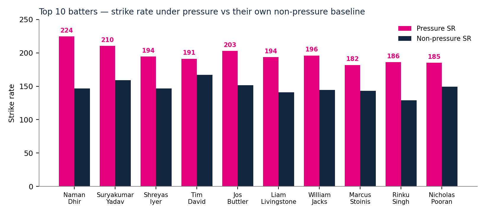
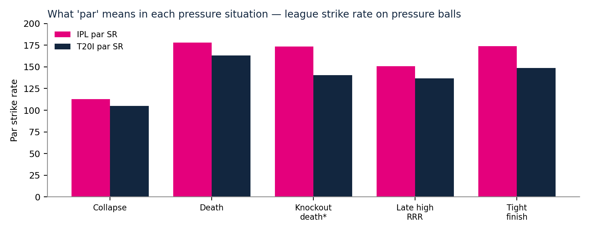

A data-driven ranking of the most reliable batters and bowlers under pressure, built from the official Round 1 data pack — 883 matches of IPL and T20I ball-by-ball data. No reputation. Just what happened on 42,009 pressure balls.
Rank 1 is the highest-rated player under pressure. Final Score (0–100) blends the five-year Pressure Rating (60%), the IPL-only pressure score (25%) and recent 2025–26 form (15%). Where two Final Scores sit within 1.0 point, the player with more IPL pressure balls ranks higher — that tie-break is why Bumrah (85.2) sits above Theekshana (85.4), and Rinku Singh (69.6) above Nicholas Pooran (70.1).
| # | Batter | Final | Press. SR | Adj. SR | Press. balls | IPL press. SR | IPL 2026 team |
|---|---|---|---|---|---|---|---|
| 1 | Naman Dhir | 92.6 | 224.5 | +68.9 | 163 | 212.8 | Mumbai Indians |
| 2 | Suryakumar Yadav | 85.5 | 210.4 | +58.7 | 374 | 204.9 | Mumbai Indians |
| 3 | Shreyas Iyer | 81.3 | 194.4 | +36.8 | 248 | 202.0 | Punjab Kings |
| 4 | Tim David | 79.8 | 191.0 | +35.7 | 536 | 197.0 | Royal Challengers Bengaluru |
| 5 | Jos Buttler | 79.7 | 202.8 | +40.8 | 213 | 210.6 | Gujarat Titans |
| 6 | Liam Livingstone | 74.7 | 193.5 | +39.2 | 246 | 221.8 | Sunrisers Hyderabad |
| 7 | William Jacks | 74.1 | 196.0 | +47.8 | 75 | 274.3 | Mumbai Indians |
| 8 | Marcus Stoinis | 73.5 | 181.8 | +30.6 | 335 | 188.0 | Punjab Kings |
| 9 | Rinku Singh | 69.6 | 186.0 | +31.1 | 530 | 179.4 | Kolkata Knight Riders |
| 10 | Nicholas Pooran | 70.1 | 185.1 | +31.3 | 435 | 192.5 | Lucknow Super Giants |
Adjusted SR = pressure strike rate minus the par strike rate for the exact situations that player faced. Naman Dhir's +68.9 means he scored about 69 runs per 100 balls more than par in the same spots. First alternates: Romario Shepherd (69.7) and Tristan Stubbs (66.5).

Every one of the Top 10 lifts his strike rate under pressure. Dhir (+78), Rinku (+57) and Livingstone (+53) improve most on their own baseline; Tim David's uplift is smallest (+24) only because his non-pressure strike rate (167.2) is already the highest of the ten.
The clear No. 1, and not a small-sample artefact. Pressure SR 224.5, adjusted +68.9, IPL pressure SR 212.8 (117 balls) and recent SR 227.8 (133 balls in 2025–26) both confirm it. The best consistency in the Top 10. RR fit: the finisher RR do not have — bid to win.
The largest proven sample after Tim David: SR 210.4, adjusted +58.7. One caution — his 2025–26 pressure SR (174.2) is well below his 2022–24 figure (223.1). Still elite, but the price must reflect a player past his peak pressure years.
The best recent form in the Top 10: pressure SR 213.5 in 2025–26 (171 balls), IPL pressure SR 202.0. A No. 4 who anchors and finishes — exactly the middle-order profile RR lack, with captaincy value on top.
The most bankable finisher in the data — the most pressure balls and pressure runs of any batter. SR 191.0, IPL pressure SR 197.0, recent SR 206.3. Volume is its own reliability argument. RR fit: bid to win.
RR know exactly what he does: pressure SR 202.8, IPL pressure SR 210.6, adjusted +40.8. Opens or finishes, and keeps wicket. A buy-back only if GT release him — Jaiswal and Vaibhav already fill the opener slots.
Best IPL pressure strike rate in the Top 10 (221.8), plus a bowling option. The flag is recency: only 17 pressure balls in 2025–26, so his recent score is neutral by rule — the ranking rests on 2022–24. Bid if the price is right, not at any price.
Adjusted SR +47.8 is third-best, but on the smallest sample in the Top 10, and his IPL pressure SR of 274.3 rests on 35 balls. Genuine upside (also bowls off-spin), genuine variance. A value bid, not a marquee bid.
SR 181.8, IPL pressure SR 188.0, recent SR 193.4 — consistent across every cut. Ignore his bowling under pressure (economy 10.69): buy the bat.
The safest IPL-proven finisher in the data: 402 IPL pressure balls, more than any batter, and the highest pressure average in the Top 10 (42.9) because he finishes unbeaten so often. RR fit: bid to win — the lowest-risk Indian finisher available.
IPL pressure SR 192.5 on 346 balls. A left-handed middle order — a different look from RR's right-heavy finishers. Recent sample is small (44 balls in 2025–26), so the ranking leans on his large IPL body of work.
Best adjusted economy in the data (−2.29) on the biggest death sample: 53% of his 475 pressure balls were at the death, IPL pressure economy 7.06 against a death par of 10.70, stable across periods (7.32 → 7.61). The benchmark — use his number to price everyone else.
The most important name here: RR's own 2025 pressure bowler (adjusted −1.79), IPL pressure economy 6.68, rock-steady across periods (7.10 → 7.03). He did not play IPL 2026. RR fit: re-sign him — available, proven, and he directly replaces the spin control RR lost.
The wicket-taker. The warning is recent form — pressure economy 9.74 in 2025–26 (114 balls) against 7.12 in 2022–24. Bid, but with a hard price ceiling; do not chase him past it.
The reliability pick: all 294 of his pressure balls were bowled in the IPL, economy 6.51, almost identical across periods (6.50 → 6.53). The most bankable spinner in the list.
IPL pressure economy 6.88, recent 6.95 — no decline anywhere in his profile, and the youngest of the spin options. RR fit: bid to win — a long-term asset, not a one-season fix.
The form pick: pressure economy improved from 8.79 (2022–24) to 6.47 (2025–26), with 53% of his pressure balls at the death. The counter-flag is his IPL pressure economy (9.23) — verify the IPL-death number before going big.
All 127 of his pressure balls came in 2025–26 — a genuine newcomer, not a five-year record — with the best dot-ball rate in the Top 10 (53.5%). IPL pressure economy 8.81 tempers the enthusiasm. A value pace bid.
Best wicket rate in the Top 10. But his IPL pressure economy is 9.39 — the T20I numbers (6.21) flatter him. A wicket-taking change-up, not a death-overs lock.
The recent trend is the story: pressure economy 6.32 in 2025–26 (222 balls) against 8.36 in the IPL overall. A mystery spinner peaking now. RR fit: bid to win if the price stays sane.
Steady rather than spectacular: economy 8.01, IPL pressure economy 8.57, recent 8.50. No red flags, no fireworks — a death-overs workhorse at a workhorse price.
Hosein is No. 1 on the raw five-year rating (88.5), with the best adjusted economy after Bumrah (−2.27) and a pressure economy of 5.63. But only 16 of his 162 pressure balls were bowled in the IPL (IPL pressure economy 7.88, against a 5.38 T20I figure), and his 2025–26 pressure economy (7.41) is far worse than his 2022–24 figure (4.47). Once IPL evidence and recent form are weighted in, he falls to 12th (Final 71.1) and is listed as first bowling alternate. That is the method working as intended, not an oversight — and it is the whole lesson of this round: the best player on paper is not always the best player when it actually matters.
Pressure is not a feeling — it is a match situation in which the cost of the next ball is unusually high. A ball is high-pressure if it meets any of five transparent rules. The same balls are pressure for the batter and for the bowler, so both rankings are built on one definition, as the brief requires.
The endgame, where every ball changes the result. 12,773 balls.
A game either side can still win. 8,799 balls.
A chase slipping away. 12,574 balls.
Rebuilding after early damage. 7,499 balls.
Elimination games at the death. 364 balls.
Rule A overlaps rules B–E, so the rows do not sum to 42,009; each ball is counted once, with priority B > A > C > D > E for the subtype tables. Why not a simpler rule? Death overs alone miss chases lost in overs 13–16 and collapses; required rate alone fails because a target of 180 makes the rate 9.00 from ball one — a normal chase, not pressure. An early, broader version labelled 43.4% of all balls as pressure — too broad to distinguish anything. The final version labels 21.7%, close to one ball in five, and every rule uses only over, innings, runs needed, balls left and wickets down, so anyone with the pack can reproduce it exactly.
A 190 strike rate in a collapse is worth far more than a 190 at the death, because the average batter scores much slower in a collapse. So for each pressure subtype — separately for IPL and T20I — the league par strike rate and par economy were computed on pressure balls:
| Pressure subtype | IPL par SR | IPL par econ | T20I par SR | T20I par econ | IPL balls | T20I balls |
|---|---|---|---|---|---|---|
| Collapse (4+ wkts down, ≤ over 10) | 112.9 | 6.79 | 104.9 | 6.31 | 2,666 | 4,833 |
| Death (overs 18–20, 2nd inns) | 177.9 | 10.70 | 163.0 | 9.83 | 5,716 | 7,057 |
| Knockout death | 173.5 | 10.43 | 140.3 | 8.42 | 230 | 134 |
| Late high required rate (≥10, over ≥13) | 150.9 | 9.08 | 136.6 | 8.22 | 5,947 | 6,627 |
| Tight finish (≤30 balls, 1–36 needed) | 173.7 | 10.45 | 148.7 | 8.94 | 4,039 | 4,760 |

Par strike rate is 65 points higher at the death than in a collapse (IPL). Any rating that compares raw strike rates across these situations without adjusting for them will simply rank death-overs specialists first. The adjusted metrics exist to stop that.
A player's adjusted strike rate is his pressure strike rate minus the par strike rate of the exact mix of situations he faced (same for economy). A player who only ever bats in collapses is judged against collapse par, not against death par.
Eligibility gates (applied before ranking): ≥70 pressure balls, ≥300 total legal balls, ≥10 pressure innings, at least two seasons in the data. This removes one-match wonders: 105 batters and 148 bowlers pass.
Auction filters (applied after ranking): (i) played in 2025 or 2026; (ii) not a Pakistan player — Pakistan players do not play in the IPL, so Babar Azam, Shaheen Afridi, Abrar Ahmed, Mohammad Nawaz and others are excluded from the submitted lists even when they rank highly on pure numbers; (iii) not in RR's IPL 2026 squad; (iv) at least 50 IPL balls in the data — this excludes T20I-only names such as Taskin Ahmed (pure-rating bowling No. 6, zero IPL balls); (v) Sanju Samson excluded — RR themselves traded him to CSK for IPL 2026. Dinesh Karthik (retired after 2024) is excluded by filter (i). No player was excluded for reputation, age or price — only by these five stated rules.
The data: only the supplied Round 1 data pack, 22 January 2022 to 1 November 2026 — 883 matches in 141 competitions (371 IPL, 512 T20I), 200,999 deliveries, 200,961 in innings 1–2 (38 super-over balls excluded), 193,251 legal balls (wides excluded — a wide is not a ball faced or bowled). 888 batters and 647 bowlers appear. A batter's runs are the runs column; a bowler's runs conceded are bat runs plus wide/no-ball extras (leg-byes and byes are not charged to the bowler); a bowler's wicket excludes run-outs, retire-outs and obstructing the field. No outside performance data was used for the rankings.
RR's problem is not talent at the top, it is reliability at the end. RR's regular batters score barely above par under pressure, and the bowlers RR most often trust at the death concede more than par there. Sanju Samson was traded to CSK for IPL 2026, and Maheesh Theekshana — RR's best pressure bowler in 2025 — did not play IPL 2026 at all. Meanwhile the top order is a strength, not a problem: Jaiswal has 1,485 IPL balls at SR 155.2 (avg 35.7) and Vaibhav Sooryavanshi 449 IPL balls at SR 229.0 — both simply rarely face the defined pressure situations (46 and 4 pressure balls), because openers bat before pressure arrives.
| Player | Press. balls | Press. SR | Adj. SR |
|---|---|---|---|
| Donovan Ferreira (bench) | 172 | 173.8 | +37.5 |
| Shubham Dubey (bench) | 92 | 182.6 | +28.4 |
| Dasun Shanaka | 357 | 159.7 | +20.5 |
| Riyan Parag (regular) | 205 | 174.6 | +15.0 |
| Shimron Hetmyer (regular finisher) | 482 | 164.7 | +13.2 |
| Dhruv Jurel (regular) | 291 | 164.6 | +4.6 |
| Yashasvi Jaiswal (opener) | 46 | 156.5 | −8.7 |
RR's bench finishers (Ferreira, Dubey) already outperform the regulars under pressure — selection, not just recruitment, is part of the fix.
| Player | Press. balls | Press. econ | Adj. econ |
|---|---|---|---|
| Nandre Burger | 95 | 8.78 | −0.78 |
| Jofra Archer | 270 | 9.02 | −0.52 |
| Ravindra Jadeja | 224 | 7.77 | −0.39 |
| Ravi Bishnoi | 605 | 8.71 | +0.39 |
| Tushar Deshpande | 312 | 11.08 | +0.98 |
| Sandeep Sharma | 282 | 11.11 | +1.13 |
| Sam Curran | 364 | 10.65 | +1.16 |
Negative adjusted economy is better than par. The three bowlers RR most often trust at the death — Deshpande, Sandeep, Curran — are all worse than par there.
The overseas-slot constraint. Only three of the Top 10 batters (Dhir, Shreyas, Rinku) and two of the Top 10 bowlers (Bumrah, Varun) are Indian. An IPL squad holds at most 8 overseas players and an XI at most 4, so RR cannot buy the whole list — the Indian core plus two or three overseas picks (Theekshana, Noor, David) is the realistic shape of the shopping list. That is also why Dhir and Rinku matter more than their raw ranks suggest: Indian finishers under pressure are the scarcest resource in this data. Price discipline: do not pay a marquee price for Pathirana (recent economy 9.74), Coetzee (IPL pressure economy 9.39) or Hosein (16 IPL pressure balls).
Split-half (2022–24 vs 2025–26). The headline names survive the split. Dhir: 210.0 → 227.8. Tim David: 184.6 → 206.3. Shreyas: 151.9 → 213.5. Theekshana: 7.10 → 7.03. Narine: 6.50 → 6.53. Bumrah: 7.32 → 7.61. The names that do not survive it are flagged, not hidden: Suryakumar (223.1 → 174.2), Stubbs (200.9 → 154.3), Pathirana (7.12 → 9.74), Kuldeep Yadav (6.86 → 9.42 — which is why Kuldeep, pure-rating No. 11 among bowlers, does not make the Top 10).
IPL vs T20I. Every Top 10 player has his IPL-only pressure number printed above. The Final Score weights IPL evidence at 25% precisely because T20I opposition is weaker (par SR is lower in every subtype) and because some T20I stars never face IPL pressure. The biggest IPL/T20I gaps in the near-misses are instructive: Hosein's IPL pressure economy is 7.88 on 16 balls against a 5.38 T20I figure; Babar Azam (pure-rating batting No. 4) has zero IPL balls and is excluded as a Pakistan player in any case.
Consistency. Dhir 83%, Narine 79%, Hosein 79%, Theekshana 73%, SKY 69%, Livingstone 70% — the Top 10 are not one-innings wonders. The lowest consistency in either Top 10 is Jacks (43%) and Bosch (54%), both flagged in their profiles.
Limitations. Pressure is defined, not discovered — the five rules are reasoned choices, not a fitted model; a win-probability leverage definition would shuffle the middle of the rankings, though the top names are robust. Sample sizes are small for Jacks (75 pressure balls), Bosch (127) and Coetzee (118) — treat their ranks as ±3, not exact. Availability is as of the data pack; retention and release decisions for IPL 2027 are not in it and were not assumed beyond the five stated filters. The data cannot see fitness, form after 1 November 2026, price, auction dynamics, or match-ups — the dashboard ranks pressure performance; the auction room must add price and fit.
Pure five-year Pressure Rating, unfiltered (for the record). Batters: 1 Naman Dhir (88.6), 2 Suryakumar Yadav (87.3), 3 Najibullah Zadran (85.8), 4 Babar Azam (79.3), 5 Dinesh Karthik (75.8), 6 Jos Buttler (75.1), 7 Phil Salt (74.7), 8 Glenn Phillips (74.0), 9 Liam Livingstone (72.9), 10 Rinku Singh (72.2). Bowlers: 1 Akeal Hosein (88.5), 2 Sufiyan Muqeem (82.9), 3 Mohammad Nawaz (82.2), 4 Matheesha Pathirana (81.1), 5 Riley Meredith (80.6), 6 Abrar Ahmed (79.2), 7 Gerald Coetzee (78.3), 8 Abbas Afridi (76.9), 9 Maheesh Theekshana (76.3), 10 Jasprit Bumrah (75.4). The Final Score and filters move Hosein, Nawaz, Sufiyan, Abrar, Meredith and Abbas out of the submitted Top 10 for the reasons stated above — the pure list is kept here so the effect of every filter is auditable.
Honestly, when I first saw the Round 1 challenge, I had no idea where to start. 883 matches, almost two lakh balls, it was a lot. So I began with the most basic question: what even counts as pressure? I wrote five rules for it. Death overs, tight finishes, a high required run rate late in a chase, collapses, and knockout games. That gave me around 42,000 pressure balls, roughly one in every five. I was careful not to compare raw numbers, because a collapse and a death over are not the same thing. So I scored every player against the par for the exact situations he faced, and built one Final Score from that, with extra weight on IPL games and recent form. My favourite pick is Naman Dhir. 224 strike rate under pressure, 69 above par, the best in the whole data. The moment that stayed with me: Akeal Hosein looked like the number one bowler on raw numbers, but once I weighted the IPL evidence he fell to 12th. Only 16 of his 162 pressure balls were even in the IPL. That was the whole lesson for me. The best player on paper is not always the best player when it actually matters.
Everything on this page was computed from the official data pack in Python (pandas). The pipeline runs in six steps, and every step is shown in full below — nothing is hidden. Run them in order in the folder that contains the data pack's ball_by_ball.csv, matches.csv and competitions.csv.
Step 1 — analyze.py: load the ball-by-ball data, rebuild the match situation ball by ball (runs needed, balls left, required run rate, wickets down) and save the enriched dataset. Step 2 — analyze2.py: apply the final five pressure rules and compute every batter's and bowler's pressure and non-pressure stats. Step 3 — analyze3.py: split pressure balls into subtypes, compute par by subtype × format, and build the adjusted (par-relative) metrics. Step 4 — rank.py: turn the components into the 0–100 Pressure Rating. Step 5 — blend.py: blend the rating with the IPL-only and recent-form scores into the Final Score. Step 6 — checks.py: the reliability checks — split-half, IPL vs T20I, and the RR squad audit. The charts on this page come from the same finalist data (make_charts.py), and the PDF report is generated from the same numbers.
import pandas as pd, numpy as np
b = pd.read_csv("Data Pack/ball_by_ball.csv", low_memory=False)
m = pd.read_csv("Data Pack/matches.csv", parse_dates=["match_date"])
comp = pd.read_csv("Data Pack/competitions.csv")
# keep innings 1-2 only (exclude super overs: 38 balls)
b = b[b['innings'].isin([1,2])].copy()
b['total_runs_ball'] = b['runs'] + b['extras1_runs'] + b['extras_2_runs']
b['is_wide'] = (b['extras_type']=='wide')
b['is_legal'] = ~b['is_wide'] # legal ball for batter/bowler counting
b['bowler_runs'] = b['runs'] + np.where(b['extras_type'].isin(['wide','Overstep']), b['extras1_runs']+b['extras_2_runs'], 0)
# bowler wicket: bowler credited unless RunOut / Retire / Obstructing
b['bowler_wkt'] = b['is_wicket'] & (~b['dismissal_type'].isin(['RunOut','Retire Out','Obstracting the field','Obstructing the field']))
b['batter_out'] = b['is_wicket'] & (b['dismissed_player_id']==b['striker_id'])
# sort for cumulative context
b = b.sort_values(['match_id','innings','innings_ball_num']).reset_index(drop=True)
# first innings total per match
first_tot = b[b['innings']==1].groupby('match_id')['total_runs_ball'].sum().rename('first_inn_total')
b = b.merge(first_tot, on='match_id', how='left')
b['target'] = b['first_inn_total'] + 1
# cumulative before ball: per match+innings
b['cum_runs_before'] = b.groupby(['match_id','innings'])['total_runs_ball'].cumsum() - b['total_runs_ball']
b['cum_wk_before'] = b.groupby(['match_id','innings'])['is_wicket'].cumsum() - b['is_wicket']
# legal balls before (approx: innings_ball_num is delivery count incl wides? use overid)
b['over_num'] = b['overid'] # 1..20
# balls remaining (legal balls): 120 - legal balls bowled before. Approx via innings_ball_num is messy with wides; use count of legal balls before
b['legal_before'] = b.groupby(['match_id','innings'])['is_legal'].cumsum() - b['is_legal'].astype(int)
b['balls_remaining'] = 120 - b['legal_before']
b['runs_needed'] = np.where(b['innings']==2, b['target'] - b['cum_runs_before'], np.nan)
b['rrr'] = np.where((b['innings']==2)&(b['balls_remaining']>0), b['runs_needed']/(b['balls_remaining']/6.0), np.nan)
b['wkts_down'] = b['cum_wk_before']
b['wkts_in_hand'] = 10 - b['cum_wk_before']
# knockout flag
ko = m.set_index('match_id')['knock_out'].to_dict()
stage = m.set_index('match_id')['stage'].to_dict()
b['knock_out'] = b['match_id'].map(ko).fillna(0)
b['stage'] = b['match_id'].map(stage)
b['is_ipl'] = b['match_id'].map(m.set_index('match_id')['comp_id']).isin(comp[comp['comp_name'].str.startswith('IPL ')]['comp_id'])
# PRESSURE DEFINITION (transparent, same balls for bat & ball)
# A death overs 17-20 | B high-RRR chase RRR>=9 | C tight finish: <=36 balls left, 1-45 needed | D collapse: >=4 wkts down before over 12
b['p_death'] = b['over_num']>=17
b['p_rrr'] = (b['innings']==2) & (b['rrr']>=9.0)
b['p_tight'] = (b['innings']==2) & (b['balls_remaining']<=36) & (b['runs_needed']>=1) & (b['runs_needed']<=45)
b['p_collapse'] = (b['wkts_down']>=4) & (b['over_num']<=12)
b['pressure'] = b['p_death'] | b['p_rrr'] | b['p_tight'] | b['p_collapse']
b['pressure_reason'] = np.where(b['p_death'],'death',np.where(b['p_rrr'],'rrr',np.where(b['p_tight'],'tight',np.where(b['p_collapse'],'collapse','none'))))
print("Total legal balls:", b['is_legal'].sum(), "pressure legal balls:", (b['pressure']&b['is_legal']).sum(), "share:", round((b['pressure']&b['is_legal']).mean(),3))
print("Pressure by reason (legal balls):")
print(b[b['is_legal']].groupby('pressure_reason').size())
print("Pressure by innings:", b[b['is_legal']].groupby(['innings','pressure']).size())
print("Pressure by IPL/T20I:", b[b['is_legal']].groupby(['is_ipl','pressure']).size())
print("Knockout balls:", b['knock_out'].sum(), "knockout pressure share:", b[b['knock_out']==1]['pressure'].mean())
b.to_pickle("balls_enriched.pkl")
print("saved balls_enriched.pkl", len(b))
import pandas as pd, numpy as np
b=pd.read_pickle("balls_enriched.pkl")
# --- PRESSURE v2 ---
b['pressure'] = (
((b['over_num']>=18)&(b['innings']==2)) |
((b['over_num']>=19)&(b['innings']==1)) |
((b['innings']==2)&(b['balls_remaining']<=30)&(b['runs_needed']>=1)&(b['runs_needed']<=36)) |
((b['innings']==2)&(b['over_num']>=13)&(b['rrr']>=10)) |
((b['wkts_down']>=4)&(b['over_num']<=10)) |
((b['knock_out']==1)&(b['over_num']>=17))
)
b['pressure'] = b['pressure'].fillna(False)
legal = b[b['is_legal']].copy()
print("pressure share legal:", round(legal['pressure'].mean(),3), legal['pressure'].sum(), "of", len(legal))
# season per match
m=pd.read_csv("Data Pack/matches.csv")
comp=pd.read_csv("Data Pack/competitions.csv")
season_map = m.set_index('match_id')['comp_id'].map(comp.set_index('comp_id')['season']).to_dict()
legal['season'] = legal['match_id'].map(season_map)
legal['match_inn'] = legal['match_id'].astype(str)+"_"+legal['innings'].astype(str)
def bat_stats(df):
g=df.groupby(['striker_id','striker_name'])
rows=[]
for (pid,name), d in g:
tot=d; pr=d[d['pressure']]; base=d[~d['pressure']]
def s(x):
balls=len(x); runs=x['runs'].sum(); outs=x['batter_out'].sum()
return balls, runs, outs, (runs/balls*100 if balls else 0), (runs/outs if outs else np.nan), ((x['is_four']|x['is_six']).mean()*100 if balls else 0), ((x['runs']==0).mean()*100 if balls else 0)
tb,tr,to,tsr,tavg,tbnd,tdot=s(tot); pb,pr_,po,psr,pavg,pbnd,pdot=s(pr); bb,br,bo,bsr,bavg,bbnd,bdot=s(base)
# pressure innings
pi = pr['match_inn'].nunique(); ti = tot['match_inn'].nunique()
# consistency: pressure innings with >=5 pressure balls and SR>=120 or 15+ runs
good=0; pin_n=0
for _,x in pr.groupby('match_inn'):
if len(x)>=5:
pin_n+=1
if x['runs'].sum()>=15 and (x['runs'].sum()/len(x)*100>=120): good+=1
cons = good/pin_n*100 if pin_n else 0
ipl_pr = pr['is_ipl'].sum(); ipl_tot = tot['is_ipl'].sum()
seasons = tot['season'].nunique()
rows.append(dict(pid=pid,name=name,tot_balls=tb,tot_runs=tr,tot_outs=to,tot_sr=tsr,tot_avg=tavg,
pr_balls=pb,pr_runs=pr_,pr_outs=po,pr_sr=psr,pr_avg=pavg,pr_bnd=pbnd,pr_dot=pdot,
base_sr=bsr,base_avg=bavg,uplift=psr-bsr,pr_inn=pi,tot_inn=ti,cons=cons,good_inn=good,pin_n=pin_n,
ipl_pr_balls=ipl_pr,ipl_tot_balls=ipl_tot,seasons=seasons))
return pd.DataFrame(rows)
def bowl_stats(df):
g=df.groupby(['bowler_id','bowler_name'])
rows=[]
for (pid,name), d in g:
tot=d; pr=d[d['pressure']]; base=d[~d['pressure']]
def s(x):
balls=len(x); runs=x['bowler_runs'].sum(); wk=x['bowler_wkt'].sum()
econ=runs/balls*6 if balls else 0; avg=runs/wk if wk else np.nan; sr=balls/wk if wk else np.nan
return balls,runs,wk,econ,avg,sr,((x['runs']==0)&(x['bowler_runs']==0)).mean()*100 if balls else 0, ((x['is_four']|x['is_six']).mean()*100 if balls else 0)
tb,tr,tw,te,ta,ts,tdot,tbnd=s(tot); pb,pr_,pw,pe,pa,ps,pdot,pbnd=s(pr); bb,br,bw,be,ba,bs,bdot,bbnd=s(base)
pi=pr['match_inn'].nunique()
good=0; pin_n=0
for _,x in pr.groupby('match_inn'):
if len(x)>=6:
pin_n+=1
if x['bowler_runs'].sum()/len(x)*6<=8.0: good+=1
cons=good/pin_n*100 if pin_n else 0
rows.append(dict(pid=pid,name=name,tot_balls=tb,tot_runs=tr,tot_wk=tw,tot_econ=te,tot_avg=ta,tot_sr=ts,
pr_balls=pb,pr_runs=pr_,pr_wk=pw,pr_econ=pe,pr_avg=pa,pr_sr=ps,pr_dot=pdot,pr_bnd=pbnd,
base_econ=be,econ_gain=be-pe,wk_rate=pw/pb*24 if pb else 0,pr_inn=pi,cons=cons,good_inn=good,pin_n=pin_n,
ipl_pr_balls=pr['is_ipl'].sum(),ipl_tot_balls=tot['is_ipl'].sum(),seasons=tot['season'].nunique(),
pace_spin=tot['pace_or_spin'].mode().iloc[0] if len(tot) else '', bowl_type=tot['bowling_type'].mode().iloc[0] if len(tot) else ''))
return pd.DataFrame(rows)
bat=bat_stats(legal); bowl=bowl_stats(legal)
bat.to_csv("bat_stats.csv",index=False); bowl.to_csv("bowl_stats.csv",index=False)
print("\nBAT eligible >=70 pr balls, >=300 tot, >=10 pr inn:")
e=bat[(bat.pr_balls>=70)&(bat.tot_balls>=300)&(bat.pr_inn>=10)]
print(len(e),"eligible")
print(e.sort_values('pr_sr',ascending=False)[['name','pr_balls','pr_runs','pr_outs','pr_sr','pr_avg','base_sr','uplift','pr_bnd','cons','ipl_pr_balls','seasons']].head(25).to_string(index=False))
print("\nBOWL eligible >=70 pr balls, >=300 tot, >=10 pr inn:")
eb=bowl[(bowl.pr_balls>=70)&(bowl.tot_balls>=300)&(bowl.pr_inn>=10)]
print(len(eb),"eligible")
print(eb.sort_values('pr_econ')[['name','pr_balls','pr_wk','pr_econ','base_econ','econ_gain','pr_avg','wk_rate','pr_dot','cons','ipl_pr_balls','pace_spin']].head(25).to_string(index=False))
b.to_pickle("balls_v2.pkl")
import pandas as pd, numpy as np
b=pd.read_pickle("balls_v2.pkl")
legal=b[b['is_legal']].copy()
# subtype priority: tight > death > lateRRR > collapse > KOdeath > none ; death = over>=18 inn2 or >=19 inn1
def subtype(row):
if not row['pressure']: return 'non-pressure'
if row['innings']==2 and row['balls_remaining']<=30 and 1<=row['runs_needed']<=36: return 'tight-finish'
if (row['innings']==2 and row['over_num']>=18) or (row['innings']==1 and row['over_num']>=19): return 'death'
if row['innings']==2 and row['over_num']>=13 and row['rrr']>=10: return 'late-high-RRR'
if row['wkts_down']>=4 and row['over_num']<=10: return 'collapse'
if row['knock_out']==1 and row['over_num']>=17: return 'knockout-death'
return 'pressure-other'
legal['subtype']=legal.apply(subtype,axis=1)
print(legal.groupby(['subtype','is_ipl']).size())
# par per subtype x format: batting SR, bowling econ
par = legal[legal['pressure']].groupby(['subtype','is_ipl']).agg(balls=('runs','size'), bat_runs=('runs','sum'), bowl_runs=('bowler_runs','sum'), wk=('bowler_wkt','sum'))
par['par_sr']=par['bat_runs']/par['balls']*100
par['par_econ']=par['bowl_runs']/par['balls']*6
par['par_wk_rate']=par['wk']/par['balls']*24
print(par.to_string())
par.to_csv("par_subtype_format.csv")
legal.to_pickle("balls_v3.pkl")
# attach par to each ball
par_sr = par['par_sr'].to_dict(); par_ec = par['par_econ'].to_dict()
legal['par_sr'] = [par_sr.get((s,f), np.nan) for s,f in zip(legal['subtype'], legal['is_ipl'])]
legal['par_econ'] = [par_ec.get((s,f), np.nan) for s,f in zip(legal['subtype'], legal['is_ipl'])]
legal['exp_runs_bat'] = legal['par_sr']/100 # expected batter runs per ball in that context
legal['exp_runs_bowl'] = legal['par_econ']/6
legal.to_pickle("balls_v3.pkl")
bat=pd.read_csv("bat_stats.csv"); bowl=pd.read_csv("bowl_stats.csv")
# last season + IPL totals per player
m=pd.read_csv("Data Pack/matches.csv"); comp=pd.read_csv("Data Pack/competitions.csv")
season_map=m.set_index('match_id')['comp_id'].map(comp.set_index('comp_id')['season']).to_dict()
legal['season']=legal['match_id'].map(season_map)
legal['match_inn']=legal['match_id'].astype(str)+'_'+legal['innings'].astype(str)
for df, idcol, namecol in [(bat,'pid','name'),(bowl,'pid','name')]:
pass
# compute adjusted metrics per batter
def adj_bat(df):
out=[]
for (pid,name), d in df.groupby(['striker_id','striker_name']):
pr=d[d['pressure']]
if len(pr)==0: continue
exp_sr = (pr['par_sr']/100*1) # per ball expected runs
# expected SR given mix = total expected runs / balls *100
exp_runs = pr['par_sr'].sum()/100
adj_sr = pr['runs'].sum()/len(pr)*100 - exp_runs/len(pr)*100 # player SR minus mix-expected SR
# also pressure SR
out.append(dict(pid=pid,name=name,pr_balls=len(pr),pr_runs=pr['runs'].sum(),pr_sr=pr['runs'].sum()/len(pr)*100,
exp_sr=exp_runs/len(pr)*100, adj_sr=adj_sr, last_season=pr['season'].max(), tot_last=d['season'].max(),
ipl_pr=(pr['is_ipl']).sum(), pr_inn=pr['match_inn'].nunique()))
return pd.DataFrame(out)
def adj_bowl(df):
out=[]
for (pid,name), d in df.groupby(['bowler_id','bowler_name']):
pr=d[d['pressure']]
if len(pr)==0: continue
exp_econ = pr['par_econ'].mean() # approx weighted by balls (each ball equal) -> mean par econ
# weighted expected econ = sum(par_econ/6)/balls*6 = mean par_econ
pecon = pr['bowler_runs'].sum()/len(pr)*6
out.append(dict(pid=pid,name=name,pr_balls=len(pr),pr_runs=pr['bowler_runs'].sum(),pr_wk=pr['bowler_wkt'].sum(),pr_econ=pecon,
exp_econ=exp_econ, adj_econ=pecon-exp_econ, last_season=pr['season'].max(), tot_last=d['season'].max(),
ipl_pr=(pr['is_ipl']).sum(), pr_inn=pr['match_inn'].nunique()))
return pd.DataFrame(out)
ab=adj_bat(legal); aw=adj_bowl(legal)
ab.to_csv("bat_adj.csv",index=False); aw.to_csv("bowl_adj.csv",index=False)
# merge with bat_stats
bat2=bat.merge(ab[['pid','exp_sr','adj_sr','last_season','tot_last']], on='pid', how='left', suffixes=('','_adj'))
bowl2=bowl.merge(aw[['pid','exp_econ','adj_econ','last_season','tot_last']], on='pid', how='left', suffixes=('','_adj'))
bat2.to_csv("bat_stats2.csv",index=False); bowl2.to_csv("bowl_stats2.csv",index=False)
print("\nBAT adj_sr top (eligible gates):")
e=bat2[(bat2.pr_balls>=70)&(bat2.tot_balls>=300)&(bat2.pr_inn>=10)]
print(e.sort_values('adj_sr',ascending=False)[['name','pr_balls','pr_sr','exp_sr','adj_sr','uplift','pr_avg','cons','ipl_pr_balls','seasons','tot_last']].head(30).to_string(index=False))
print("\nBOWL adj_econ top (eligible gates):")
eb=bowl2[(bowl2.pr_balls>=70)&(bowl2.tot_balls>=300)&(bowl2.pr_inn>=10)]
print(eb.sort_values('adj_econ')[['name','pr_balls','pr_econ','exp_econ','adj_econ','econ_gain','pr_wk','wk_rate','pr_dot','cons','ipl_pr_balls','pace_spin','tot_last']].head(30).to_string(index=False))
import pandas as pd, numpy as np
bat=pd.read_csv("bat_stats2.csv"); bowl=pd.read_csv("bowl_stats2.csv")
# pakistan players (IPL-ineligible) - by name, verify via teams? hardcode from knowledge, cross-check with T20I teams
PAK = {"Babar Azam","Shaheen Afridi","Abrar Ahmed","Mohammad Nawaz","Mohammad Wasim","Abbas Afridi","Fakhar Zaman","Saim Ayub","Sufiyan Muqeem","Mohammad Rizwan","Haris Rauf","Naseem Shah","Shadab Khan","Iftikhar Ahmed","Salman Mirza","Usman Khan","Mohammad Haris","Azam Khan"}
RR_CORE = {"Sanju Samson","Yashasvi Jaiswal","Riyan Parag","Dhruv Jurel","Shimron Hetmyer","Jofra Archer","Sandeep Sharma","Tushar Deshpande","Wanindu Hasaranga","Maheesh Theekshana"}
# note Theekshana was RR 2025-26? He played for RR in 2025. Check later; keep flag only Samson for now in final filter, others noted
def norm(s, higher_better=True):
s=s.astype(float)
lo,hi=s.quantile(0.02), s.quantile(0.98)
x=(s-lo)/(hi-lo)*100
x=x.clip(0,100)
return x if higher_better else 100-x
def bat_rating(df):
e=df[(df.pr_balls>=70)&(df.tot_balls>=300)&(df.pr_inn>=10)].copy()
e['n_adj']=norm(e['adj_sr'],True); e['n_sr']=norm(e['pr_sr'],True); e['n_cons']=e['cons'].clip(0,100)
e['n_uplift']=norm(e['uplift'],True); e['n_vol']=norm(np.log(e['pr_balls']),True)
e['n_avg']=norm(e['pr_avg'].fillna(e['pr_avg'].median()).clip(upper=60),True)
e['rating']=0.40*e['n_adj']+0.20*e['n_sr']+0.15*e['n_cons']+0.10*e['n_uplift']+0.10*e['n_vol']+0.05*e['n_avg']
return e.sort_values('rating',ascending=False)
def bowl_rating(df):
e=df[(df.pr_balls>=70)&(df.tot_balls>=300)&(df.pr_inn>=10)].copy()
e['n_adj']=norm(e['adj_econ'],False); e['n_econ']=norm(e['pr_econ'],False); e['n_wk']=norm(e['wk_rate'],True)
e['n_cons']=e['cons'].clip(0,100); e['n_vol']=norm(np.log(e['pr_balls']),True); e['n_dot']=norm(e['pr_dot'],True)
e['rating']=0.40*e['n_adj']+0.15*e['n_econ']+0.20*e['n_wk']+0.10*e['n_cons']+0.10*e['n_vol']+0.05*e['n_dot']
return e.sort_values('rating',ascending=False)
br=bat_rating(bat); wr=bowl_rating(bowl)
br.to_csv("bat_ranked.csv",index=False); wr.to_csv("bowl_ranked.csv",index=False)
pd.set_option('display.width',250)
print("=== BAT composite top 25 (all eligible) ===")
print(br[['name','rating','pr_balls','pr_runs','pr_sr','adj_sr','uplift','pr_avg','cons','ipl_pr_balls','tot_last']].head(25).round(1).to_string(index=False))
print("\n=== BOWL composite top 25 (all eligible) ===")
print(wr[['name','rating','pr_balls','pr_wk','pr_econ','adj_econ','wk_rate','pr_dot','cons','ipl_pr_balls','pace_spin','tot_last']].head(25).round(2).to_string(index=False))
print("\n=== BAT filtered: active>=2025, not PAK, not Samson ===")
f=br[(pd.to_numeric(br.tot_last, errors='coerce')>=2025)&(~br.name.isin(PAK))&(~br.name.isin(["Sanju Samson","Dinesh Karthik"]))]
print(f[['name','rating','pr_balls','pr_runs','pr_sr','adj_sr','uplift','pr_avg','cons','ipl_pr_balls','tot_last']].head(15).round(1).to_string(index=False))
print("\n=== BOWL filtered: active>=2025, not PAK ===")
fw=wr[(pd.to_numeric(wr.tot_last, errors='coerce')>=2025)&(~wr.name.isin(PAK))]
print(fw[['name','rating','pr_balls','pr_wk','pr_econ','adj_econ','wk_rate','pr_dot','cons','ipl_pr_balls','pace_spin','tot_last']].head(15).round(2).to_string(index=False))
print("\n=== RR core check ===")
print("bat RR:", bat[bat.name.isin(RR_CORE)][['name','pr_balls','pr_sr','adj_sr','tot_last']].to_string(index=False))
print("bowl RR:", bowl[bowl.name.isin(RR_CORE)][['name','pr_balls','pr_econ','adj_econ','tot_last']].to_string(index=False))
import pandas as pd, numpy as np
b=pd.read_pickle("balls_v3.pkl")
legal=b[b['is_legal']].copy()
# par IPL-only per subtype
par = legal[(legal['pressure'])&(legal['is_ipl'])].groupby('subtype').agg(balls=('runs','size'), bat_runs=('runs','sum'), bowl_runs=('bowler_runs','sum'))
par['par_sr']=par['bat_runs']/par['balls']*100; par['par_econ']=par['bowl_runs']/par['balls']*6
print("IPL-only par:\n", par.to_string())
psr=par['par_sr'].to_dict(); pec=par['par_econ'].to_dict()
def ipl_bat(df):
out={}
d=df[df['is_ipl'] & df['pressure']]
for (pid,name), x in d.groupby(['striker_id','striker_name']):
if len(x)<20: continue
exp = sum(psr.get(s,150) for s in x['subtype'])/len(x)
sr = x['runs'].sum()/len(x)*100
out[pid]=(len(x), sr, sr-exp)
return out
def ipl_bowl(df):
out={}
d=df[df['is_ipl'] & df['pressure']]
for (pid,name), x in d.groupby(['bowler_id','bowler_name']):
if len(x)<20: continue
exp = sum(pec.get(s,9.0) for s in x['subtype'])/len(x)
ec = x['bowler_runs'].sum()/len(x)*6
out[pid]=(len(x), ec, ec-exp)
return out
ib=ipl_bat(legal); iw=ipl_bowl(legal)
bat=pd.read_csv("bat_ranked.csv"); bowl=pd.read_csv("bowl_ranked.csv")
# recent 2025-26 adj: use full par (subtype x format) already in balls_v3 par_sr/par_econ
legal['yr']=legal['match_id'].map(pd.read_csv('Data Pack/matches.csv').set_index('match_id')['comp_id'].map(pd.read_csv('Data Pack/competitions.csv').set_index('comp_id')['season']).to_dict()).astype(str).str[:4].astype(float)
def recent_bat(df):
out={}
d=df[(df['yr']>=2025)&df['pressure']]
for (pid,name), x in d.groupby(['striker_id','striker_name']):
if len(x)<30: continue
exp=x['par_sr'].mean(); sr=x['runs'].sum()/len(x)*100
out[pid]=(len(x), sr, sr-exp)
return out
def recent_bowl(df):
out={}
d=df[(df['yr']>=2025)&df['pressure']]
for (pid,name), x in d.groupby(['bowler_id','bowler_name']):
if len(x)<30: continue
exp=x['par_econ'].mean(); ec=x['bowler_runs'].sum()/len(x)*6
out[pid]=(len(x), ec, ec-exp)
return out
rb=recent_bat(legal); rw=recent_bowl(legal)
# blended: final = 0.6*rating + 0.25*ipl_score + 0.15*recent_score ; scores normalised 0-100 within eligible pool
def norm_dict(vals, higher=True):
s=pd.Series(vals); lo,hi=s.quantile(0.05),s.quantile(0.95); x=((s-lo)/(hi-lo)*100).clip(0,100)
return (x if higher else 100-x).to_dict()
# BAT
e=bat[(bat.pr_balls>=70)&(bat.tot_balls>=300)&(bat.pr_inn>=10)].copy()
e['ipl_adj_raw']=[ib.get(p,(np.nan,np.nan,np.nan))[2] if p in ib else np.nan for p in e.pid]
e['ipl_adj']=[(ib[p][2]*ib[p][0]/(ib[p][0]+60)) if p in ib else np.nan for p in e.pid]
e['ipl_balls2']=[ib.get(p,(0,0,0))[0] if p in ib else 0 for p in e.pid]
e['rec_adj']=[(rb[p][2]*rb[p][0]/(rb[p][0]+60)) if p in rb else np.nan for p in e.pid]
e['ipl_score']=pd.Series(norm_dict(e['ipl_adj'].dropna(),True)).reindex(e.index)
# fill missing ipl score with 30 (penalty for no IPL pressure evidence)
e['ipl_score']=e['ipl_score'].fillna(30)
e['rec_score']=pd.Series(norm_dict(e['rec_adj'].dropna(),True)).reindex(e.index).fillna(40)
e['final']=0.60*e['rating']+0.25*e['ipl_score']+0.15*e['rec_score']
e=e.sort_values('final',ascending=False)
e.to_csv("bat_final.csv",index=False)
print("\nBAT blended top 20:")
print(e[['name','rating','final','pr_balls','pr_sr','adj_sr','ipl_balls2','ipl_adj','rec_adj','ipl_pr_balls','tot_last']].head(20).round(1).to_string(index=False))
# BOWL
w=bowl[(bowl.pr_balls>=70)&(bowl.tot_balls>=300)&(bowl.pr_inn>=10)].copy()
w['ipl_adj']=[(iw[p][2]*iw[p][0]/(iw[p][0]+60)) if p in iw else np.nan for p in w.pid]
w['ipl_balls2']=[iw.get(p,(0,0,0))[0] if p in iw else 0 for p in w.pid]
w['rec_adj']=[(rw[p][2]*rw[p][0]/(rw[p][0]+60)) if p in rw else np.nan for p in w.pid]
w['ipl_score']=pd.Series(norm_dict(w['ipl_adj'].dropna(),False)).reindex(w.index).fillna(30)
w['rec_score']=pd.Series(norm_dict(w['rec_adj'].dropna(),False)).reindex(w.index).fillna(40)
w['final']=0.60*w['rating']+0.25*w['ipl_score']+0.15*w['rec_score']
w=w.sort_values('final',ascending=False)
w.to_csv("bowl_final.csv",index=False)
print("\nBOWL blended top 20:")
print(w[['name','rating','final','pr_balls','pr_econ','adj_econ','ipl_balls2','ipl_adj','rec_adj','ipl_pr_balls','pace_spin','tot_last']].head(20).round(2).to_string(index=False))
import pandas as pd, numpy as np
b=pd.read_pickle("balls_v3.pkl")
legal=b[b['is_legal']].copy()
_mm=pd.read_csv('Data Pack/matches.csv'); _cc=pd.read_csv('Data Pack/competitions.csv')
_smap=_mm.set_index('match_id')['comp_id'].map(_cc.set_index('comp_id')['season']).to_dict()
legal['season']=legal['match_id'].map(_smap)
legal['match_inn']=legal['match_id'].astype(str)+'_'+legal['innings'].astype(str)
def yr(s):
try: return int(str(s)[:4])
except: return np.nan
legal['yr']=legal['season'].apply(yr)
legal['period']=np.where(legal['yr']>=2025,'2025-26','2022-24')
bat_final=["Naman Dhir","Suryakumar Yadav","Jos Buttler","Phil Salt","Glenn Phillips","Liam Livingstone","Rinku Singh","Tim David","Shreyas Iyer","Tristan Stubbs","William Jacks","Nicholas Pooran"]
bowl_final=["Akeal Hosein","Matheesha Pathirana","Gerald Coetzee","Maheesh Theekshana","Jasprit Bumrah","Corbin Bosch","Sunil Narine","Mustafizur Rahman","Noor Ahmad","Kuldeep Yadav","Rashid Khan","Eshan Malinga"]
def bat_check(name):
d=legal[(legal['striker_name']==name)]
pr=d[d['pressure']]
def sr(x): return x['runs'].sum()/len(x)*100 if len(x) else np.nan
ipl=pr[pr['is_ipl']]; t20=pr[~pr['is_ipl']]
e1=pr[pr['period']=='2022-24']; e2=pr[pr['period']=='2025-26']
print(f"{name}: PR {len(pr)}b SR {sr(pr):.1f} | IPL-PR {len(ipl)}b SR {sr(ipl):.1f} | T20I-PR {len(t20)}b SR {sr(t20):.1f} | 22-24 {len(e1)}b SR {sr(e1):.1f} | 25-26 {len(e2)}b SR {sr(e2):.1f} | death-share {(pr['subtype']=='death').mean()*100:.0f}% | IPL tot balls {len(d[d['is_ipl']])}")
def bowl_check(name):
d=legal[(legal['bowler_name']==name)]
pr=d[d['pressure']]
def ec(x): return x['bowler_runs'].sum()/len(x)*6 if len(x) else np.nan
def wr(x): return x['bowler_wkt'].sum()/len(x)*24 if len(x) else np.nan
ipl=pr[pr['is_ipl']]; t20=pr[~pr['is_ipl']]
e1=pr[pr['period']=='2022-24']; e2=pr[pr['period']=='2025-26']
print(f"{name}: PR {len(pr)}b Ec {ec(pr):.2f} Wk/24 {wr(pr):.2f} | IPL-PR {len(ipl)}b Ec {ec(ipl):.2f} | T20I-PR {len(t20)}b Ec {ec(t20):.2f} | 22-24 {len(e1)}b Ec {ec(e1):.2f} | 25-26 {len(e2)}b Ec {ec(e2):.2f} | death-share {(pr['subtype']=='death').mean()*100:.0f}% | IPL tot balls {len(d[d['is_ipl']])}")
print("=== BAT finalists ===")
for n in bat_final: bat_check(n)
print("\n=== BOWL finalists ===")
for n in bowl_final: bowl_check(n)
print("\n=== RR 2026 squad pressure (bat) ===")
rr26=["Yashasvi Jaiswal","Vaibhav Sooryavanshi","Riyan Parag","Dhruv Jurel","Shimron Hetmyer","Ravindra Jadeja","Sam Curran","Donovan Ferreira","Dasun Shanaka","Shubham Dubey","Lhuan Pretorius"]
bat=pd.read_csv("bat_stats2.csv")
print(bat[bat.name.isin(rr26)][['name','tot_balls','pr_balls','pr_runs','pr_sr','adj_sr','uplift','pr_avg','cons','ipl_pr_balls']].round(1).sort_values('adj_sr',ascending=False).to_string(index=False))
print("\n=== RR 2026 squad pressure (bowl) ===")
bowl=pd.read_csv("bowl_stats2.csv")
rrb=["Jofra Archer","Sandeep Sharma","Tushar Deshpande","Nandre Burger","Kwena Maphaka","Kuldeep Sen","Ravi Bishnoi","Vignesh Puthur","Ravindra Jadeja","Sam Curran","Adam Milne","Yudhvir Singh"]
print(bowl[bowl.name.isin(rrb)][['name','tot_balls','pr_balls','pr_wk','pr_econ','adj_econ','wk_rate','pr_dot','cons','ipl_pr_balls']].round(2).sort_values('adj_econ').to_string(index=False))
print("\n=== Dataset summary ===")
print("matches:", len(pd.read_csv('Data Pack/matches.csv')), "balls inn1-2:", len(b), "legal:", len(legal), "pressure legal:", legal['pressure'].sum())
print("IPL matches:", pd.read_csv('Data Pack/matches.csv').merge(pd.read_csv('Data Pack/competitions.csv'),on='comp_id').query("match_format=='T20'").shape[0])
Reproduce it: take ball_by_ball.csv (innings 1–2, wides excluded), rebuild runs-needed, balls-left, wickets-down and required rate ball by ball, apply the five rules, compute par by subtype × format, then the ratings with the gates and filters stated. Every number on this page follows from those steps; no step uses data outside the pack. Full repo, including the report builder and computed data: github.com/Aman05cody/superr-selector-round-1.